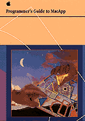

Programmer's Guide to MacApp
MacApp is an object-oriented application framework that provides many of the basic features of a standard Macintosh application. MacApp handles the details of working with the Macintosh Operating System and user interface, allowing you to concentrate on your areas of expertise.The Programmer's Guide explains the theory and architecture behind MacApp, describes the programming features MacApp supports, and provides sample code and step-by-step instructions for implementing a variety of program features.
A companion reference, the MacApp Class and Method Reference , describes the classes, methods, fields, and global variables and functions of the MacApp class library.
Availability: Click below to obtain Programmer's Guide to MacApp in any of the following formats.
Book Contents
- Figures and Tables
- Preface - About This Book
- Chapter 1 - MacApp Overview
- Part 1 - MacApp Theory and Architecture
- Chapter 2 - Basic Operations
- Chapter 3 - Core Technologies
- Chapter 4 - Launching and Terminating an Application
- Chapter 5 - Events and Commands
- Chapter 6 - Scripting
- Chapter 7 - Document Handling
- Chapter 8 - Displaying, Manipulating, and Printing Data
- Chapter 9 - Drag and Drop
- Part 2 - Working With MacApp
- Chapter 10 - Working With Objects
- Chapter 11 - Working With Applications
- Chapter 12 - Working With Menus
- Chapter 13 - Working With Events and Commands
- Chapter 14 - Working With Scripting
- Chapter 15 - Working With the Mouse
- Chapter 16 - Working With Documents
- Chapter 17 - Working With Views
- Chapter 18 - Working With Windows
- Chapter 19 - Working With Dialog Boxes and Controls
- Chapter 20 - Working With the Keyboard
- Chapter 21 - Working With the Cursor
- Chapter 22 - Working With the Clipboard
- Chapter 23 - Working With Printing
- Chapter 24 - Working With Memory and Failure Handling
- Chapter 25 - Working With Lists and Iteration
- Chapter 26 - Working With Dependencies
- Chapter 27 - Working With Streams
- Chapter 28 - Working With Drag and Drop
- Chapter 29 - Working With PowerTalk Mailers
- Chapter 30 - Working With Balloon Help
- Chapter 31 - Working With the Edition Manager
- Appendix A - Working With the MacApp Build System
- Appendix B - Organization of the MacApp Class Library
- Appendix C - Organization of MacApp's Source Code
- Glossary
- Index
- Colophon